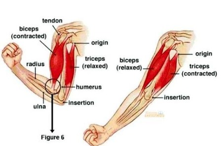
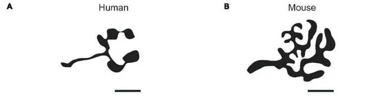
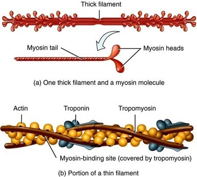
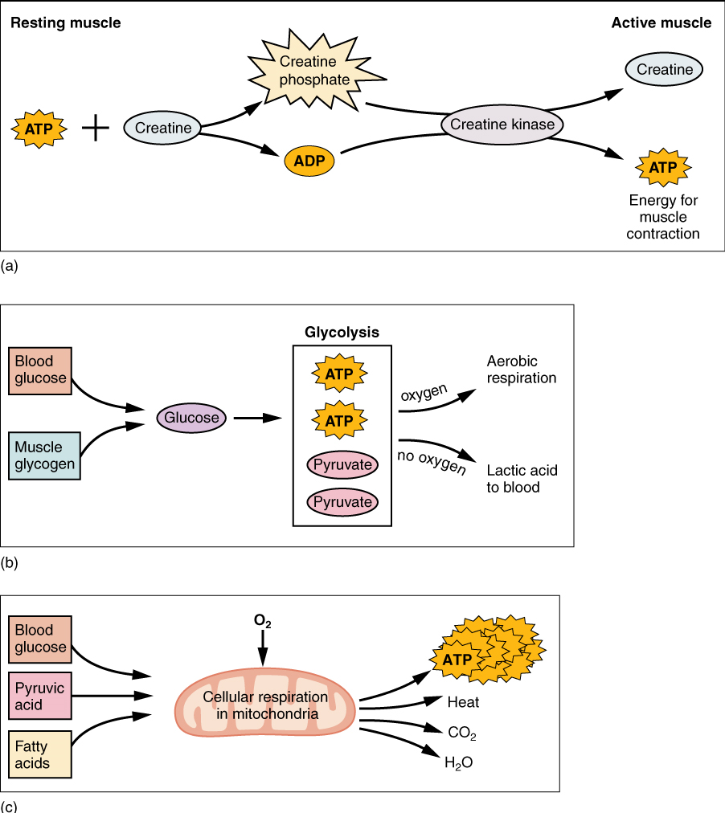

Otot rangka merupakan salah satu jaringan utama penyusun sistem gerak manusia yang melekat pada tulang melalui tendon dan berperan dalam menghasilkan gerakan tubuh, mempertahankan postur, serta membantu berbagai aktivitas fungsional. Kemampuan otot untuk menghasilkan gaya bergantung pada organisasi struktur otot mulai dari tingkat makroskopis hingga molekuler.
Berdasarkan struktur dan fungsinya, jaringan otot dibedakan menjadi tiga jenis: otot rangka, otot polos, dan otot jantung. Pemahaman komprehensif mengenai jaringan ini mencakup susunan anatomi makroskopis, mikroskopis, hingga mekanisme molekuler interaksi aktin dan miosin.
- Memahami anatomi makroskopis otot rangka (epimisium, perimisium, endomisium, tendon).
- Memahami struktur mikroskopis serat otot (sarkolema, tubulus T, retikulum sarkoplasma).
- Memahami struktur molekuler sarkomer, tautan neuromuskular (NMJ), serta mekanisme sliding filament.
- Memahami proses relaksasi, sumber energi kontraksi, karakteristik kedutan otot, dan kelainan sistem otot.
Sistem muskular tersusun atas jaringan otot yang berperan sebagai alat gerak aktif. Otot menyusun sekitar 40%–50% berat badan manusia dengan total lebih dari 600 otot.
 Gambar 2.1 Anatomi Sistem Otot (Sumber: Deposit Photos)
Gambar 2.1 Anatomi Sistem Otot (Sumber: Deposit Photos)
Tendon menghubungkan otot dengan tulang untuk meneruskan gaya tarik, sedangkan ligamen menghubungkan tulang dengan tulang untuk menjaga kestabilan sendi.
 Gambar 2.2 Letak Ligamen dan Tendon (Sumber: Flex-free)
Gambar 2.2 Letak Ligamen dan Tendon (Sumber: Flex-free)
Otot dibagi menjadi 3 jenis: Otot Rangka (volunter/lurik), Otot Polos (involunter/organ dalam), dan Otot Jantung (involunter/jantung).
 Gambar 2.3 Jenis-Jenis Otot (Sumber: Ginting et al., 2022)
Gambar 2.3 Jenis-Jenis Otot (Sumber: Ginting et al., 2022)
Sifat khas jaringan otot meliputi: Kontraktilitas, Eksitabilitas, Konduktivitas, Ekstensibilitas, dan Elastisitas.
Contoh otot rangka meliputi biseps, triseps, dan gastrocnemius.

Gambar 2.4 Anatomi Sistem Otot Rangka (Sumber: Putra et al., 2022)Lapisan pembungkus otot terdiri atas:
- Epimisium: Lapisan jaringan ikat paling luar pembungkus seluruh otot.
- Perimisium: Membungkus satu fasikulus (kumpulan serat otot).
- Endomisium: Membungkus setiap satu serat/sel otot.
- Tendon (Origo & Insersio): Menghubungkan otot ke tulang. Origo berada di tulang yang stabil, insersio di tulang yang bergerak.
 Gambar 2.5 Struktur Anatomi Makroskopis Otot Rangka (Sumber: APKI)
Gambar 2.5 Struktur Anatomi Makroskopis Otot Rangka (Sumber: APKI)
- Berbentuk sel silindris panjang, tidak bercabang, dan multinukleat di perifer sel.
- Menunjukkan striasi melintang berupa pita gelap (A-band) dan pita terang (I-band).
Miofibril tersusun atas membran khusus yang mendukung penghantaran impuls:
- Sarkolema: Membran plasma pembungkus serat otot yang mengalami invaginasi membentuk tubulus T.
- Tubulus T: Meneruskan potensial aksi dari sarkolema ke dalam bagian dalam sel otot.
- Retikulum Sarkoplasma: Sistem membran pembungkus miofibril yang menyimpan dan melepaskan ion Ca²⁺. Triad dibentuk oleh 1 tubulus T yang diapit 2 sisterna terminalis.
 Gambar 2.6 Struktur Anatomi Mikroskopis Serat Otot (Sumber: Wikipedia)
Gambar 2.6 Struktur Anatomi Mikroskopis Serat Otot (Sumber: Wikipedia)
Sarkomer adalah unit kontraktil terkecil yang dibatasi oleh dua Z-disc.
- Filamen Tebal (Miosin): Memiliki kepala miosin yang berfungsi sebagai ATPase untuk mengikat aktin.
- Filamen Tipis (Aktin): Tersusun atas protein aktin, troponin, dan tropomiosin.
- Filamen Elastis (Titin): Menjaga kestabilan miosin di tengah sarkomer.
 Gambar 2.7 Struktur Molekular Sarkomer (Sumber: ClinicalPub)
Gambar 2.7 Struktur Molekular Sarkomer (Sumber: ClinicalPub)
 Gambar 2.8 Troponin dan Tropomiosin (Sumber: Nature)
Gambar 2.8 Troponin dan Tropomiosin (Sumber: Nature)
Pola Pita Sarkomer: Cakram Z, Pita A (gelap), Pita I (terang), Zona H, dan Garis M.
 Gambar 2.9 Anatomi Serat Otot dan Sarkomer (Sumber: Palni Pressbooks)
Gambar 2.9 Anatomi Serat Otot dan Sarkomer (Sumber: Palni Pressbooks)
Neuromuscular Junction (NMJ) menghubungkan neuron motorik dengan serat otot.

Gambar 2.10 Perbandingan NMJ pada Manusia dan Tikus (Sumber: Badawi & Nishimune, 2020)Komponen NMJ terdiri dari Terminal Pra-sinapsis, Celah Sinaptik (mengandung enzim asetilkolinesterase), dan Pelat Ujung / End Plate.
 Gambar 2.11 Anatomi Neuromuscular Junction (Sumber: Anatomy Corner)
Gambar 2.11 Anatomi Neuromuscular Junction (Sumber: Anatomy Corner)
Mekanisme: Impuls saraf → Kanal Ca²⁺ terbuka → Eksositosis Asetilkolin (ACh) → Pengikatan ACh pada reseptor di motor end plate → Influks Na⁺ → Depolarisasi sarkolema.
 Gambar 2.12 Mekanisme NMJ dan Pelepasan Asetilkolin (Sumber: Quizlet)
Gambar 2.12 Mekanisme NMJ dan Pelepasan Asetilkolin (Sumber: Quizlet)

Gambar 2.13 Struktur Sarkomer (Sumber: APKI) Gambar 2.14 Inisiasi Kontraksi Otot (Sumber: LibreTexts)
Gambar 2.14 Inisiasi Kontraksi Otot (Sumber: LibreTexts)
Tahapan Kontraksi:
- Pelepasan Ion Ca²⁺ dari retikulum sarkoplasma ke sitosol via tubulus T.
- Ca²⁺ berikatan dengan Troponin C → Tropomiosin bergeser menyingkap situs aktif aktin.
- Kepala miosin berikatan dengan aktin membentuk Cross-Bridge.
- Power Stroke: Kepala miosin menarik aktin ke pusat sarkomer menggunakan energi ATP.
- Pengikatan ATP baru melepaskan miosin untuk mengulang siklus.
 Gambar 2.15 Tahapan Sliding Filament Theory saat Kontraksi (Sumber: Geeksforgeeks)
Gambar 2.15 Tahapan Sliding Filament Theory saat Kontraksi (Sumber: Geeksforgeeks)
Perubahan Sarkomer saat Kontraksi: Garis Z mendekat, Pita I memendek, Zona H mengecil/menghilang, sedangkan Pita A tetap konstan.
 Gambar 2.16 Sarkomer saat Mengalami Kontraksi (Sumber: OpenStax)
Gambar 2.16 Sarkomer saat Mengalami Kontraksi (Sumber: OpenStax)
 Gambar 2.17 Inisiasi Relaksasi Otot (Sumber: LibreTexts)
Gambar 2.17 Inisiasi Relaksasi Otot (Sumber: LibreTexts)
Relaksasi terjadi saat impuls saraf berhenti. Pompa **SERCA (Sarco/endoplasmic reticulum Ca²⁺-ATPase)** menggunakan ATP untuk memompa ion Ca²⁺ kembali ke dalam retikulum sarkoplasma. Hal ini menyebabkan troponin-tropomiosin kembali menutupi situs aktif aktin sehingga cross-bridge terhenti.
 Gambar 2.18 Rangkaian Proses Kontraksi dan Relaksasi (Sumber: Wasil Zafar)
Gambar 2.18 Rangkaian Proses Kontraksi dan Relaksasi (Sumber: Wasil Zafar)
ATP dibutuhkan untuk kayuhan miosin, pelepasan miosin, dan pompa kalsium SERCA. Regenerasi ATP dilakukan melalui 3 sistem:
- Sistem Fosfagen (Fosfokreatin): Cepat (1 reaksi enzimatik via kreatin kinase), tanpa O₂, bertahan ~15 detik.
- Glikolisis Anaerobik: Memecah glukosa menjadi asam piruvat/asam laktat, menghasilkan 2 ATP, bertahan ~1 menit.
- Respirasi Aerobik: Berlangsung di mitokondria dengan O₂, menghasilkan 32–36 ATP, mendukung aktivitas durasi panjang.

Gambar 2.19 Metabolisme Otot (Sumber: Pressbooks)Muscle Twitch (Kedutan Otot): Respons tunggal yang terdiri dari 3 fase: Fase Laten, Fase Kontraksi, dan Fase Relaksasi.
 Gambar 2.20 Myogram Kedutan Otot (Sumber: Pressbooks)
Gambar 2.20 Myogram Kedutan Otot (Sumber: Pressbooks)
Sumasi & Tetanus: Peningkatan frekuensi impuls menghasilkan penjumlahan gelombang gaya hingga terjadi Tetanus Tidak Sempurna (bergerigi) atau Tetanus Sempurna (plat konstan gaya maksimal).
 Gambar 2.21 Kontraksi Penjumlahan dan Tetanus (Sumber: Pressbooks)
Gambar 2.21 Kontraksi Penjumlahan dan Tetanus (Sumber: Pressbooks)
Kelelahan Otot: Penurunan kinerja akibat akumulasi fosfat anorganik (Pi), gangguan gradien ion K⁺ pada tubulus T, serta penurunan ketersediaan kalsium.
- Distrofi Otot Duchenne (DMD): Kelainan genetik akibat ketiadaan protein distrofin.
- Miastenia Gravis (MG): Penyakit autoimun di mana antibodi menyerang reseptor asetilkolin di NMJ.
- Tetanus: Infeksi bakteri pengeksekusi toksin yang merusak fungsi transmisi saraf.
- Tendinitis: Peradangan tendon akibat penggunaan berulang (overuse).
 Gambar 2.22 Miastenia Gravis (Sumber: Pressbooks)
Gambar 2.22 Miastenia Gravis (Sumber: Pressbooks)
Sistem muskular merupakan komponen utama sistem gerak aktif tubuh manusia. Pengorganisasian struktur otot rangka teratur dari skala makroskopis (epimisium, perimisium, endomisium, tendon) hingga molekuler (sarkomer dengan filamen aktin dan miosin). Proses fisiologi otot melibatkan keterpaduan antara impuls sinaps NMJ, pelepasan asetilkolin, aksi ion Ca²⁺, mekanisme pergeseran filamen (Sliding Filament Theory), aktivitas pompa SERCA saat relaksasi, serta dukungan metabolik ATP dari jalur fosfagen, glikolisis, maupun respirasi aerobik.
Disarankan bagi mahasiswa untuk mengombinasikan pemahaman teori dengan media praktikum visual dan kajian literatur terkini guna memahami keterkaitannya dengan kelainan patologis klinis.